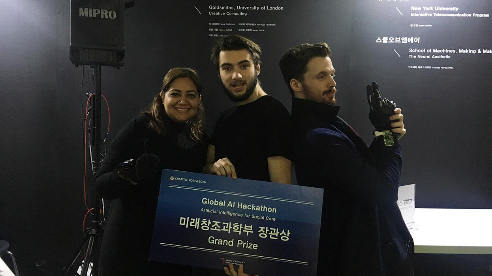

Here are recordings and descriptions of my talks, workshops I've delivered
and papers/articles I've published.
If you'd like me to talk at your event, feel free to drop me an email.
Towards Networked Communion [2020]
Co-authored with Karin Vališová. An article exploring the possibilities of complex systems to achieve togetherness in the context of shamanic practice and digital realities.
Oracles for Troubling Times: Designing new divination systems
A Hermetechnics Inc. workshop designed for Uroboros festival. Ran online on 15 May 2020 with Karin Vališová.
A creative workshop where we learn about divination as a new way of navigating cyber-realities, explore various (non-)traditional divination systems developed around the world and imagine new methods of divination for the future.
r-audio: Declarative, reactive and flexible Web Audio graphs in React — WAC 2018
Personalising the public - IBC 2018 [coauthor]
Full title: Personalising the public: personalising linear radio at a public service broadcaster
Coauthored with T.Cowlishaw, T. Burlington, D. Man, R. Barrington and G. Wright.
With competition from online streaming platforms, many broadcasters have viewed the idea
of providing some form of personalisation of their services as a necessity to remain competitive.
In June 2018 Tim Cowlishaw and I had
the amazing opportunity to show some of our work at
Sonar+D, the technology and creativity conference
attached to the Sonar Festival in Barcelona.
We condensed the findings from our
‘Singing with Machines’ project into a three-hour workshop for sound
artists and musicians; introducing them to the technologies and tools used to create
interactive voice experiences
First Prize at the Global AI Hackathon Seoul [2016]

I was part of a team from Goldsmiths, University of London at the
Global AI Hackathon in Seoul organised by Nabi Art Centre. The hackathon
participants included teams from the USA, Germany, China and South Korea.
Along with
Hadeel Ayoub and
Leon Fedden we developed a working
prototype of a glove which detects learned hand gestures and translates them into
speech using IBM Watson APIs. Our project was awarded the first prize.